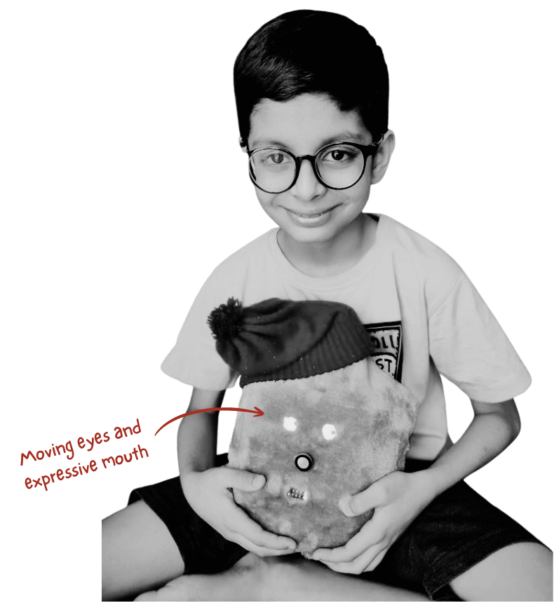
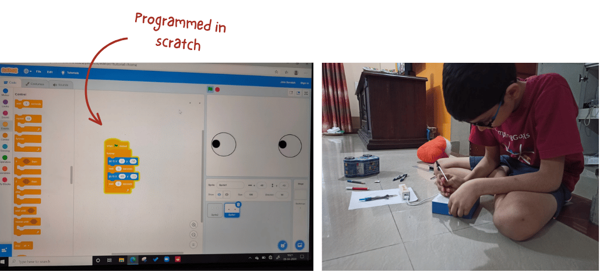
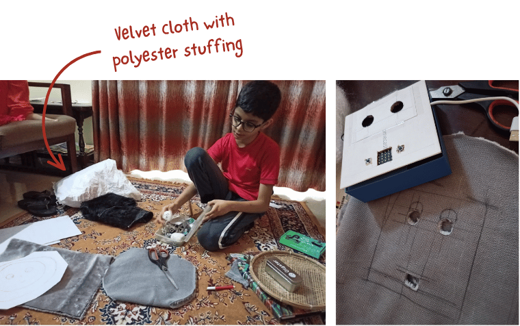
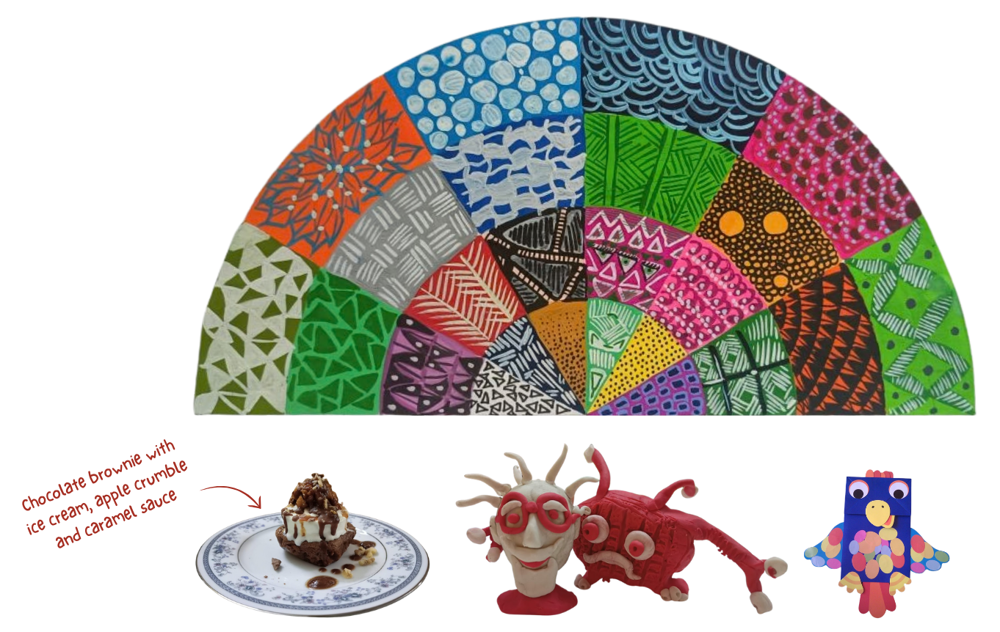
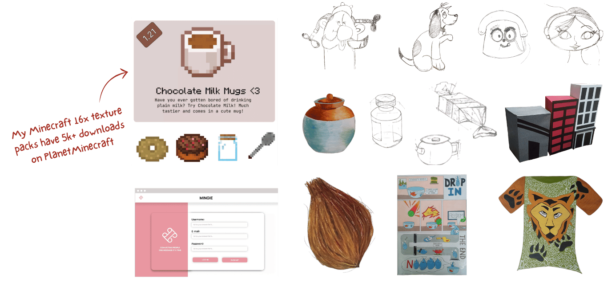

Portfolio
I started by making things.
Before I knew what design was, I was already making the things I imagined. I built with whatever caught my attention. I once built a soft-toy robot with a Scratch programmed display for eyes, cutting and stuffing its velvet body myself. I was simply curious about turning an idea in my head into something real. That instinct to make, explore and make things my own was where my design journey began.



Curiosity kept taking form.
Curiosity kept taking me from one thing to another. I drew characters, played with textures, clay, experimented with food, built objects, and explored digital tools. I never really had a fixed idea of what I was making - I just wanted to see where an idea could take me.


Then I started asking why.
With DIKSHA, I began looking beyond what something looked like and started asking how people actually experienced it. What do they click? What do they expect next? Where do they hesitate? I started mapping user flows and observing behaviour rather than assuming that a visually simple interface would automatically be easy to use.
| User Type | Current vs Proposed | Improvement |
|---|---|---|
| Guest user | 16 to 13 clicks | 18.75% fewer clicks |
| Logged-in user | 7 to 6 clicks | 14.29% fewer clicks |


Then I started asking why not.
Once I became comfortable asking why something worked the way it did, I started asking a different question: why not change it? With WhatsApp meets Discord, I explored what might happen when familiar interactions and features were brought together differently. I was no longer only analysing existing experiences. I was beginning to imagine alternatives.


I started reimagining experiences.
I was given an opportunity to help a startup rethink food ordering. Instead of a fixed sequence of menus and choices, I explored how the experience could adapt to what a person feels like in that moment - from knowing exactly what they want to being open to surprise. What if an app could understand not just what you want, but how you want to choose?


I designed experiences for low resource settings.
After solving for a 'premium' customer experience with no constraints on the customer side, I wanted to design an experience for low resource settings e.g. a classroom introducing edtech but only with one phone for 60 students. I designed the story tag concept to solve for this - creating a fun social experience while checking for oral reading fluency.


I started observing last mile problems.
This project explored how a kirana store owner could digitize their inventory without manually entering every product. After speaking with a store owner, I explored voice input and quick selection from a crowdsourced catalog to make cataloguing faster and easier on the move. The prototype received a Special Mention at the ONDC Grand Hackathon.


Small frustrations became design opportunities.
I started solving for real world frustrations. A pen that was difficult to find in my compass box, my parents' difficulty in keeping their phone steady during video calls - I began noticing these moments because I was looking for them. Instead of only asking what I could make, I started asking what was worth making.


A 3D printer turned my ideas into products.
3D printing gave me a direct connection between an idea and a physical result. I could notice something, measure it, model a solution and print it. Suddenly, an idea did not have to remain a sketch or thought experiment. I could hold it, test it and discover what I had got wrong.


3D prototyping made me think of manufacturability.
Prototyping made me think beyond form. I started noticing fit, tolerances, mechanisms, assembly and the realities of manufacturing. It also introduced me to new ways in which mechanisms can be built - a hinge that assembles during manufacturing itself. The more I made, the more I understood that manufacturing is not something that happens after design. It is part of design.


My objects became small experiments.
A threaded container became a test of whether I could create an airtight seal. A toilet roll holder became a test of material strength. A bottle cap became a test of measurement, fit and iteration. These were small objects, but each one gave me a question that I could answer by making and testing.


I missed making things with my hands.
Digital tools had made making faster, but they also made me appreciate the physical act of building even more. Drawing, cutting, assembling and working with materials gave me a different kind of understanding. I began to see that thinking and making were not separate activities for me. Making was one of the ways I think.


Can I change the way people interact with the product?
This question took me towards games and interaction. With COR, I became interested not just in the product itself, but in what it made people do. A game creates choices, strategies, competition and interaction through its rules. I began to see that design can shape behaviour without directly telling someone what to do.


Can I design indoor versions of outdoor games while preserving the same emotions?
Mini Lagori made this question very real for me. Moving an outdoor game indoors meant changing its scale, environment and physical dynamics. But I did not want to simply make a smaller version. I wanted to understand what made the original experience meaningful i.e. the competition, physical interaction, rebuilding, social play and familiarity.


Can I preserve more Indian games this way?
Once I thought about Lagori this way, I started seeing the possibility beyond one game. Indian games carry more than rules. They carry ways of interacting, competing, playing and spending time together. I began wondering whether design could help these experiences find a place in contemporary life.


I wanted to preserve traditions of small, unsung communities.
My curiosity expanded from games to traditions that may not always have the same visibility or reach. I became interested in how digital experiences could help document, communicate and connect people with cultural practices. The question was no longer only about designing a product. It was about what happens to things we value when the world around them changes.


How do you design for someone who can't express themselves?
I designed and 3D-printed a toy for Boka, combining two things I thought might catch his attention: a rat and a fish. It looked like a cat toy to me, but Boka barely noticed it. The failure made me question my assumptions: I had designed what I thought a cat would want, without really understanding what Boka actually found interesting. Sometimes the most useful prototype is the one that tells you your idea was wrong.


I researched human emotion and how it affects us.
I began exploring human emotion through research. This was a different kind of making: instead of starting with an object, I started with literature, evidence, analysis and questions about human behaviour. The work eventually became a paper accepted in the Student Research consortium at the India HCI conference at IIT Hyderabad.


Can I use AI to create a prototype that does this?
That question led me to experiment with AI as a design and research tool. I created a prototype that could take an image and analyse the emotions using the ETR framework and expressed potential health risks it might trigger. What interested me was not simply making an AI prototype, but seeing whether technology could help investigate something as complex as human emotion.


Existential Question: Can AI do what a designer does?
I started benchmarking AI models for emotion detection and comparing different image-generation tools. I wanted to move beyond simply using AI and start asking what it can actually do, how we evaluate its output, where it falls short, and what role remains for human creativity. AI can execute well, but struggles to conceptualize beyond the direction it is given. I often need to provide extremely detailed prompts to get the result I have in mind. But knowing what to conceptualize and whether it is worth conceptualizing still feels distinctly human.


I am still figuring out where this leads...
I started with objects, but gradually became interested in what happens around them - the emotions they create, the behaviours they encourage and the experiences they become part of. As AI changes how things are made, I want to keep exploring what humans bring that technology cannot: empathy, imagination, context and judgement. I want to make things that are not only functional, but meaningful to the people and environments they become part of.